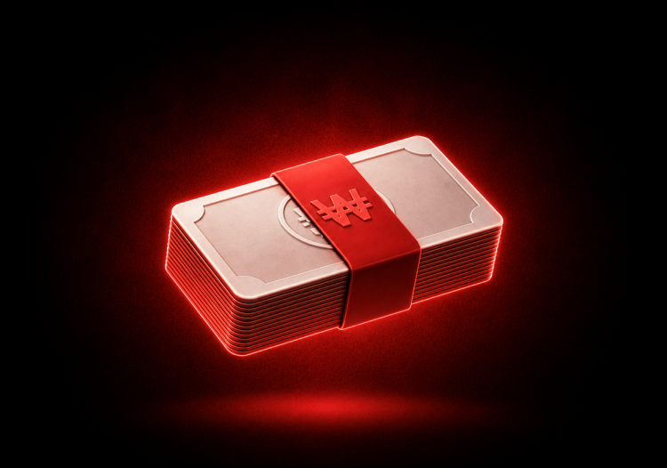
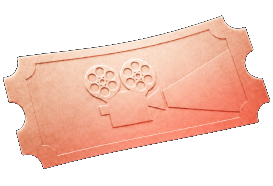
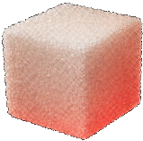
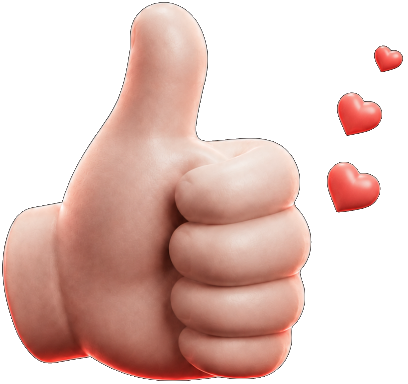
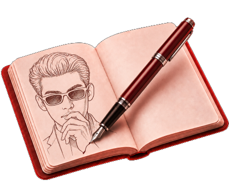
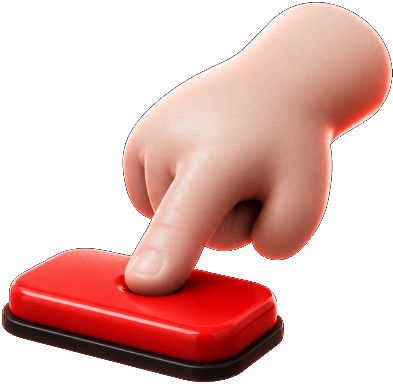
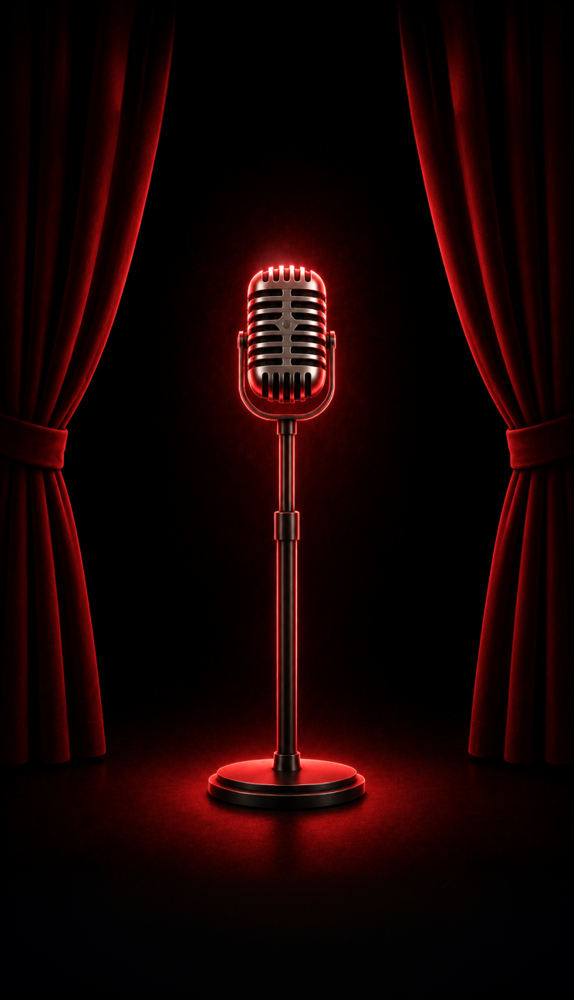

영화 좀 보신다구요?

1등

현금 100만원
0/1
2등

월간 구독권
0/3
참가상

슈가 5만~천개
참가상, 전원

많은 호응받기
좋아요, 설문참여, 댓글, 공유, 저장이 올라갈수록
반영 점수가 올라가요. 친구들에게 많이 공유해주세요.

독창적으로 보여주기
다른 사람들과는 다른 나만의 콘텐츠로 만들어보세요.
독창적인 콘텐츠일수록 반영 점수가 올라가요.

더 많이 응모하기
열 번 찍어 안 넘어가는 나무는 없어요.
횟수제한 없이 콘텐츠를 응모할 수 있어요.
친구들에게 소문내기
콘테스트를 주변 지인들에게 공유해주세요.
내 공유로 친구들이 참여하면 가산점을 받아요.

이벤트 안내
참가상 지급
제출된 응모작은 이벤트 참여 조건 충족 여부를 확인한 후 승인됩니다.
기본 참여 조건을 충족하여 승인된 모든 참가자에게 참가상 슈가가 지급됩니다.
참가상은 횟수 제한 없이 지급됩니다.
게시물이 비공개이거나 삭제된 경우, 제출한 링크로 게시물을 확인할 수 없는 경우, 필수 참여 조건이 누락된 경우에는 승인이 제한될 수 있습니다.
부정 참여 및 당첨 취소
다음에 해당하는 경우 참여 승인 또는 당첨이 취소되며, 지급된 슈가와 경품이 회수될 수 있습니다.
응모작 및 원본 제출
응모자는 직접 제작한 콘텐츠만 제출할 수 있으며, 타인의 콘텐츠를 도용하거나 무단으로 사용해서는 안 됩니다.
수상자는 경품 지급을 위해 게시물의 원본 영상과 회사가 요청하는 확인 자료를 제출해야 합니다.
제출한 원본이 응모 게시물과 다르거나 원본을 제출하지 않는 경우, 실제 제작자임을 확인할 수 없는 경우에는 당첨이 취소될 수 있습니다.
저작권 및 콘텐츠 활용
수상작의 저작재산권은 경품 지급을 조건으로 글레이즈에 양도됩니다.
양도되는 권리에는 수상작의 복제, 배포, 전시, 공중송신과 수정·편집·재가공 및 2차적저작물 작성·이용에 관한 권리가 포함됩니다.
글레이즈는 수상작을 서비스 운영, 광고, 홍보 및 마케팅 목적으로 기간과 매체의 제한 없이 활용할 수 있습니다.
응모작에 제3자의 저작권, 초상권, 상표권 등 권리가 포함된 경우 응모자가 사전에 필요한 동의를 받아야 하며, 이와 관련하여 발생하는 책임은 응모자에게 있습니다.
경품 지급
당첨자는 안내된 기간 내 본인 확인과 경품 지급에 필요한 정보 및 원본 파일을 제출해야 합니다.
기간 내 자료를 제출하지 않거나 제출 정보가 가입자 또는 당첨자 정보와 일치하지 않는 경우 당첨이 취소될 수 있습니다.
현금 경품은 당첨자 본인 명의의 국내 은행 계좌로만 지급됩니다.
경품에 부과되는 제세공과금은 당첨자 본인이 부담하며, 관련 세액을 공제한 금액이 지급됩니다.
참여하기 완료 후에는 정보를
수정할 수 없어요.